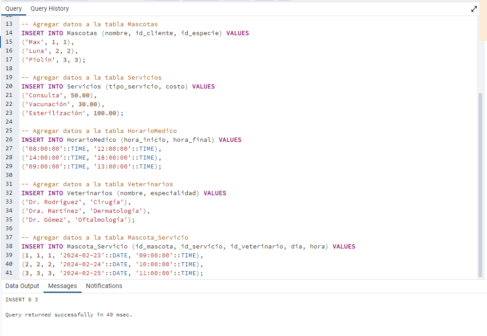
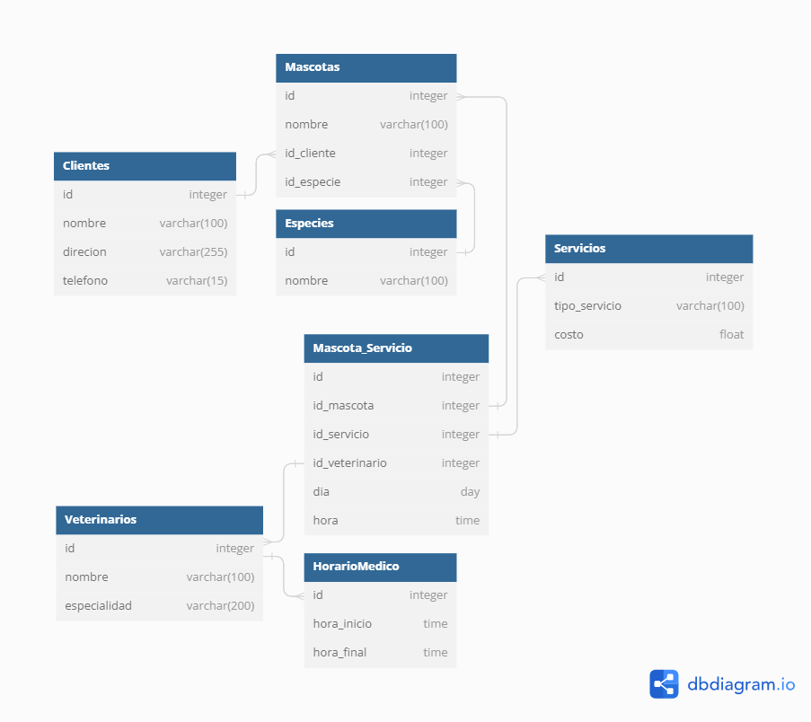
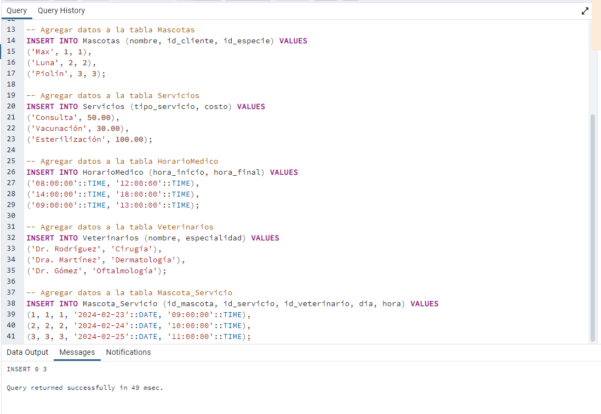
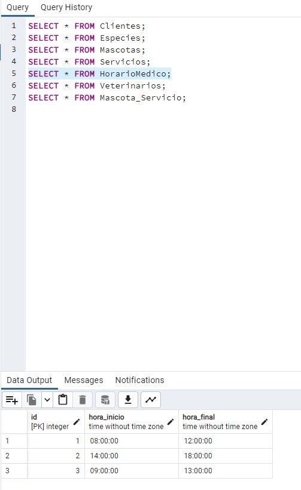
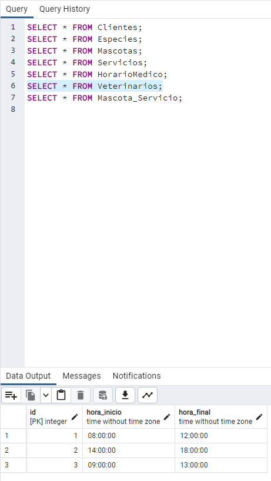
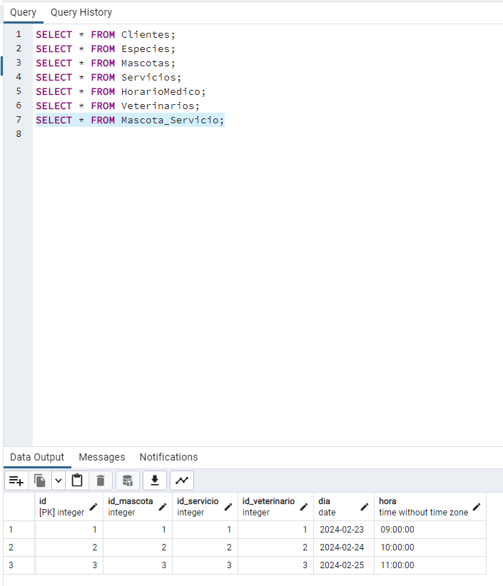
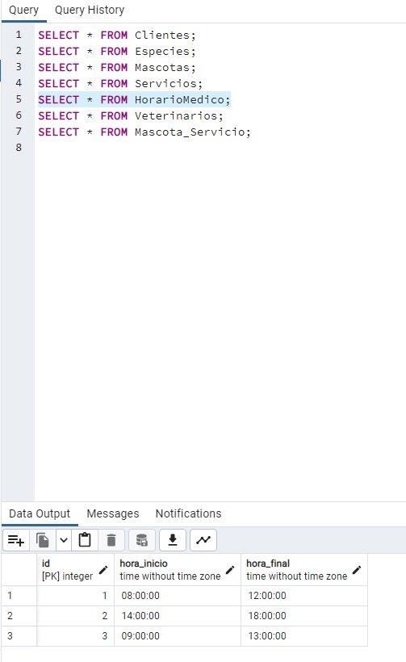
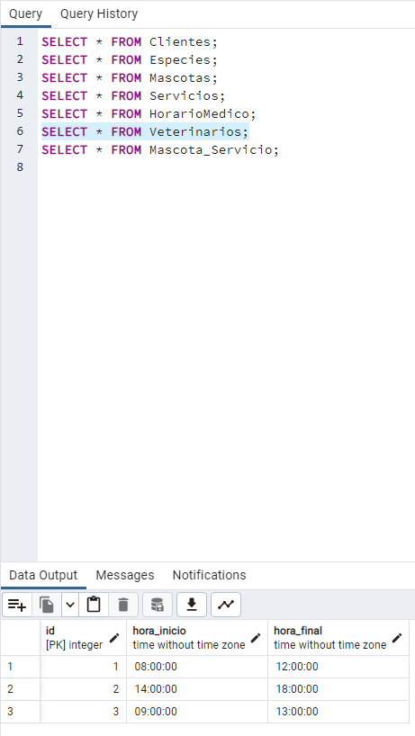
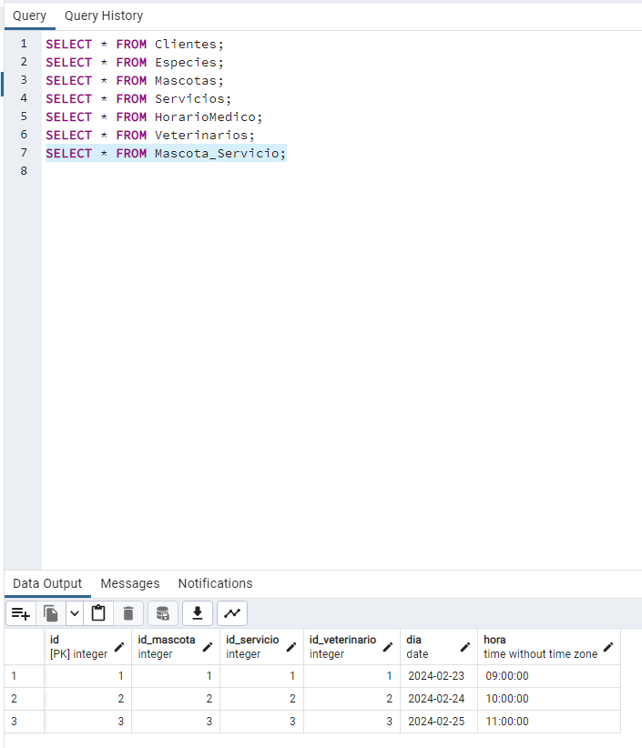

| Diagrama E-R. | Diagrama Relacional(normalizado) |
|---|---|
 |
| Crear la base de datos | Insertamos datos |
|---|---|
|
 |

 





CREATE TABLE `Clientes` ( `id` integer NOT NULL AUTO_INCREMENT PRIMARY KEY, `nombre` varchar(100), `direcion` varchar(255), `telefono` varchar(15) ); CREATE TABLE `Especies` ( `id` integer NOT NULL AUTO_INCREMENT PRIMARY KEY, `nombre` varchar(100) ); CREATE TABLE `Mascotas` ( `id` integer NOT NULL AUTO_INCREMENT PRIMARY KEY, `nombre` varchar(100), `id_cliente` integer, `id_especie` integer ); CREATE TABLE `Servicios` ( `id` integer NOT NULL AUTO_INCREMENT PRIMARY KEY, `tipo_servicio` varchar(100), `costo` float ); CREATE TABLE `HorarioMedico` ( `id` integer NOT NULL AUTO_INCREMENT PRIMARY KEY, `hora_inicio` time, `hora_final` time ); CREATE TABLE `Veterinarios` ( `id` integer NOT NULL AUTO_INCREMENT PRIMARY KEY, `nombre` varchar(100), `especialidad` varchar(200) ); CREATE TABLE `Mascota_Servicio` ( `id` integer NOT NULL AUTO_INCREMENT PRIMARY KEY, `id_mascota` integer, `id_servicio` integer, `id_veterinario` integer, `dia` day, `hora` time ); ALTER TABLE `Mascotas` ADD FOREIGN KEY (`id_especie`) REFERENCES `Especies` (`id`); ALTER TABLE `Mascotas` ADD FOREIGN KEY (`id_cliente`) REFERENCES `Clientes` (`id`); ALTER TABLE `HorarioMedico` ADD FOREIGN KEY (`id`) REFERENCES `Veterinarios` (`id`); ALTER TABLE `Mascotas` ADD FOREIGN KEY (`id`) REFERENCES `Mascota_Servicio` (`id_mascota`); ALTER TABLE `Servicios` ADD FOREIGN KEY (`id`) REFERENCES `Mascota_Servicio` (`id_servicio`); ALTER TABLE `Veterinarios` ADD FOREIGN KEY (`id`) REFERENCES `Mascota_Servicio` (`id_veterinario`); -- Agregar datos a la tabla Clientes INSERT INTO Clientes (nombre, direcion, telefono) VALUES ('Juan Perez', 'Calle 123', '555-1234'), ('María García', 'Avenida Principal', '555-5678'), ('Pedro López', 'Paseo de los Robles', '555-9101'); -- Agregar datos a la tabla Especies INSERT INTO Especies (nombre) VALUES ('Perro'), ('Gato'), ('Pájaro'); -- Agregar datos a la tabla Mascotas INSERT INTO Mascotas (nombre, id_cliente, id_especie) VALUES ('Max', 1, 1), ('Luna', 2, 2), ('Piolín', 3, 3); -- Agregar datos a la tabla Servicios INSERT INTO Servicios (tipo_servicio, costo) VALUES ('Consulta', 50.00), ('Vacunación', 30.00), ('Esterilización', 100.00); -- Agregar datos a la tabla HorarioMedico INSERT INTO HorarioMedico (hora_inicio, hora_final) VALUES ('08:00:00', '12:00:00'), ('14:00:00', '18:00:00'), ('09:00:00', '13:00:00'); -- Agregar datos a la tabla Veterinarios INSERT INTO Veterinarios (nombre, especialidad) VALUES ('Dr. Rodríguez', 'Cirugía'), ('Dra. Martínez', 'Dermatología'), ('Dr. Gómez', 'Oftalmología'); -- Agregar datos a la tabla Mascota_Servicio INSERT INTO Mascota_Servicio (id_mascota, id_servicio, id_veterinario, dia, hora) VALUES (1, 1, 1, '2024-02-23', '09:00:00'), (2, 2, 2, '2024-02-24', '10:00:00'), (3, 3, 3, '2024-02-25', '11:00:00');